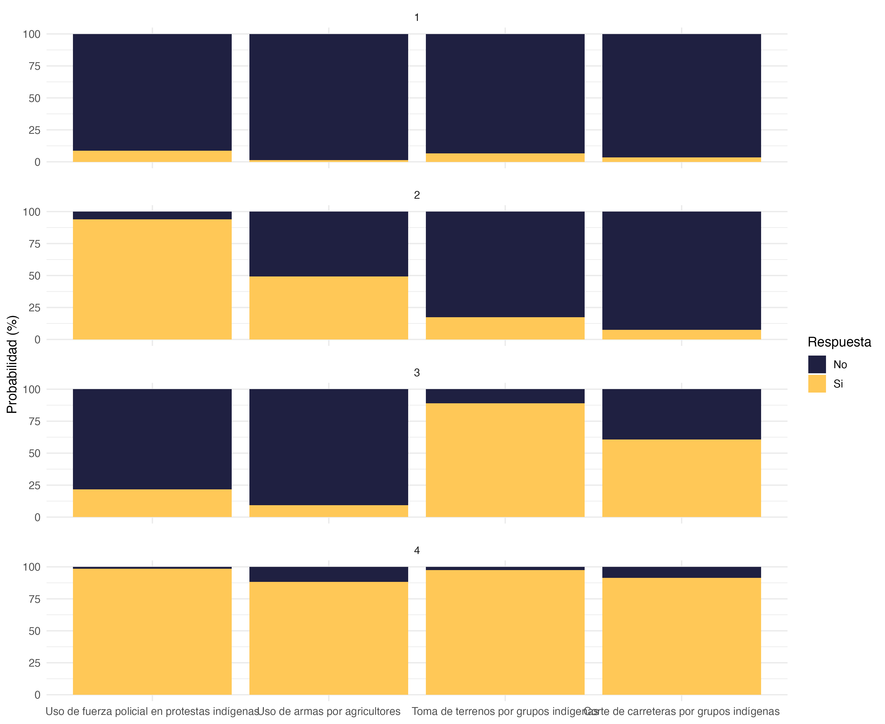
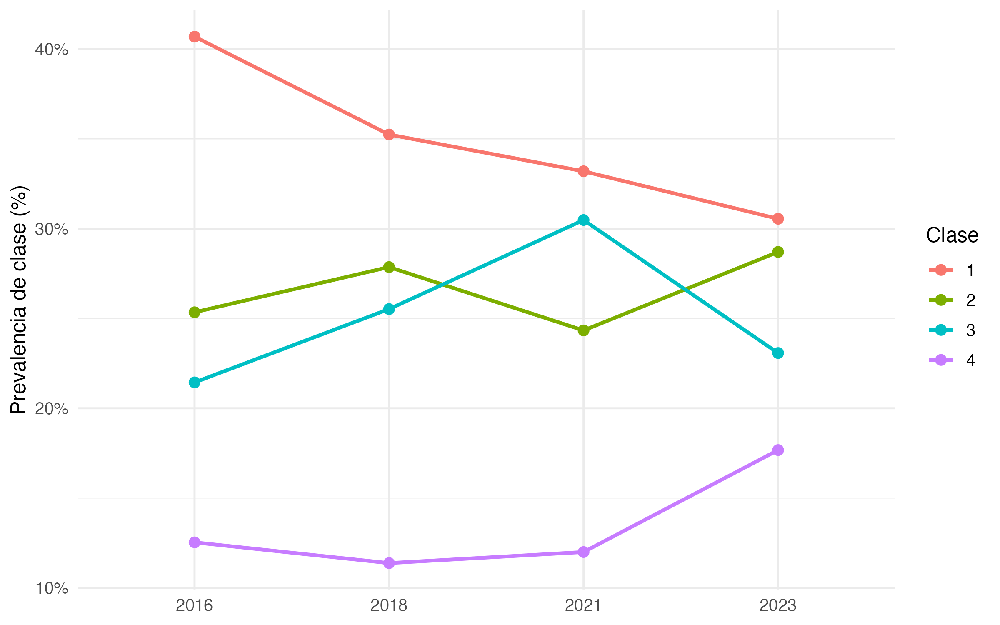
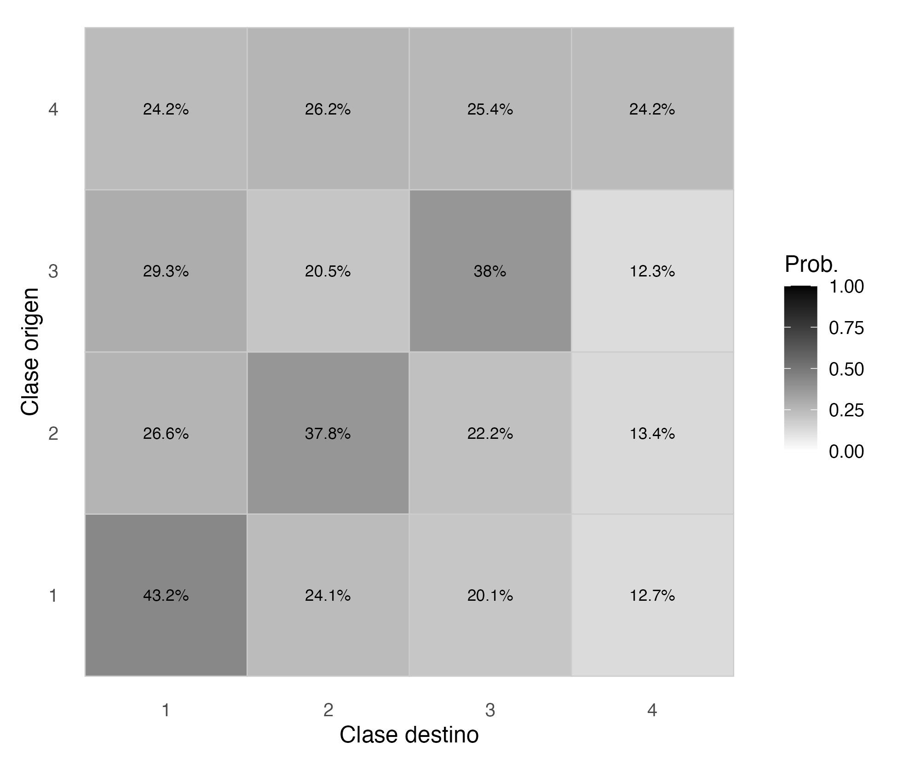
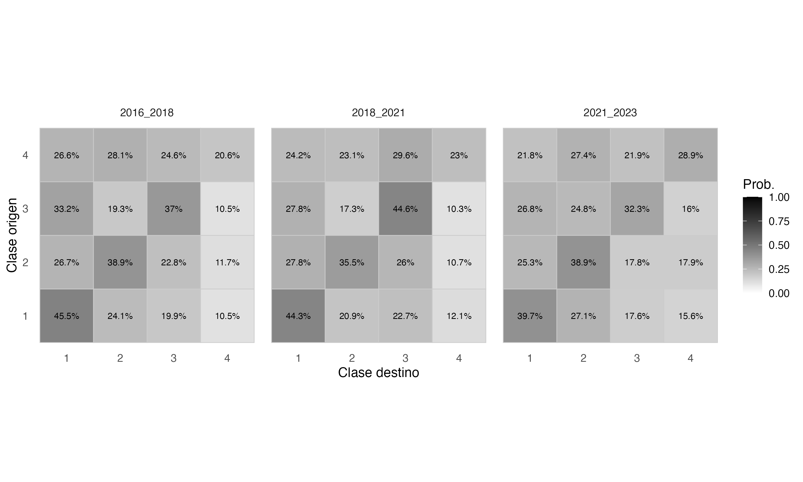
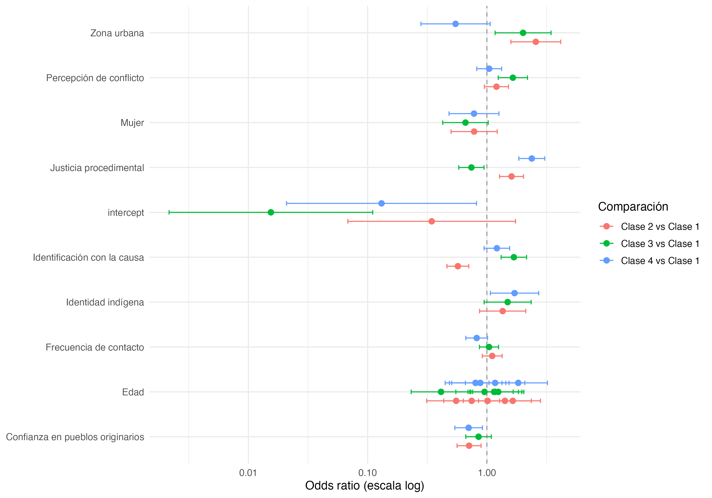
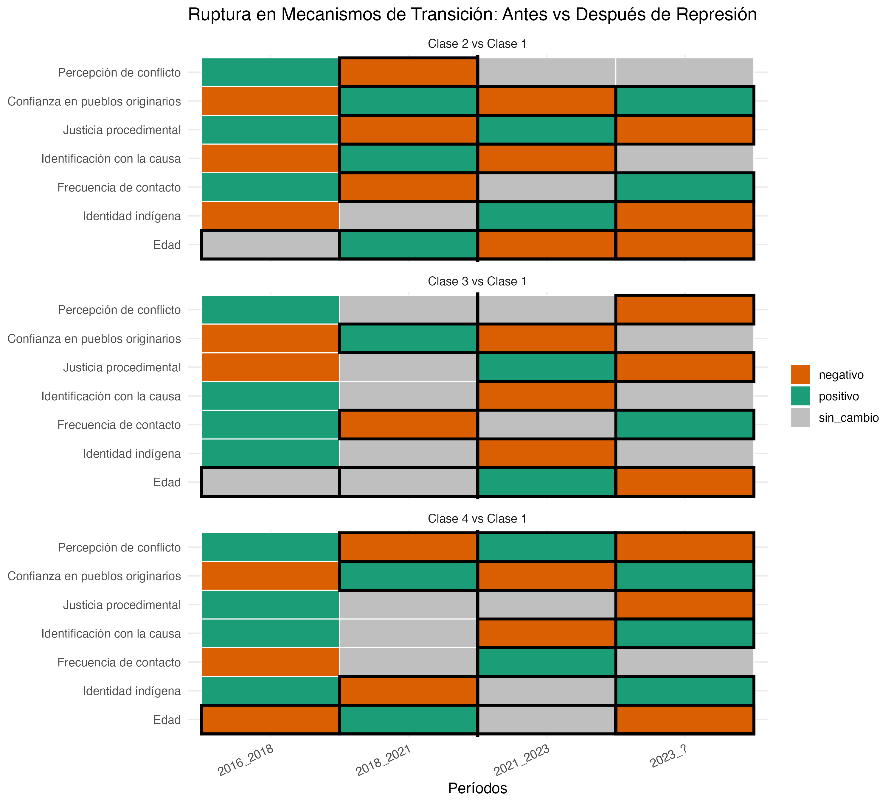
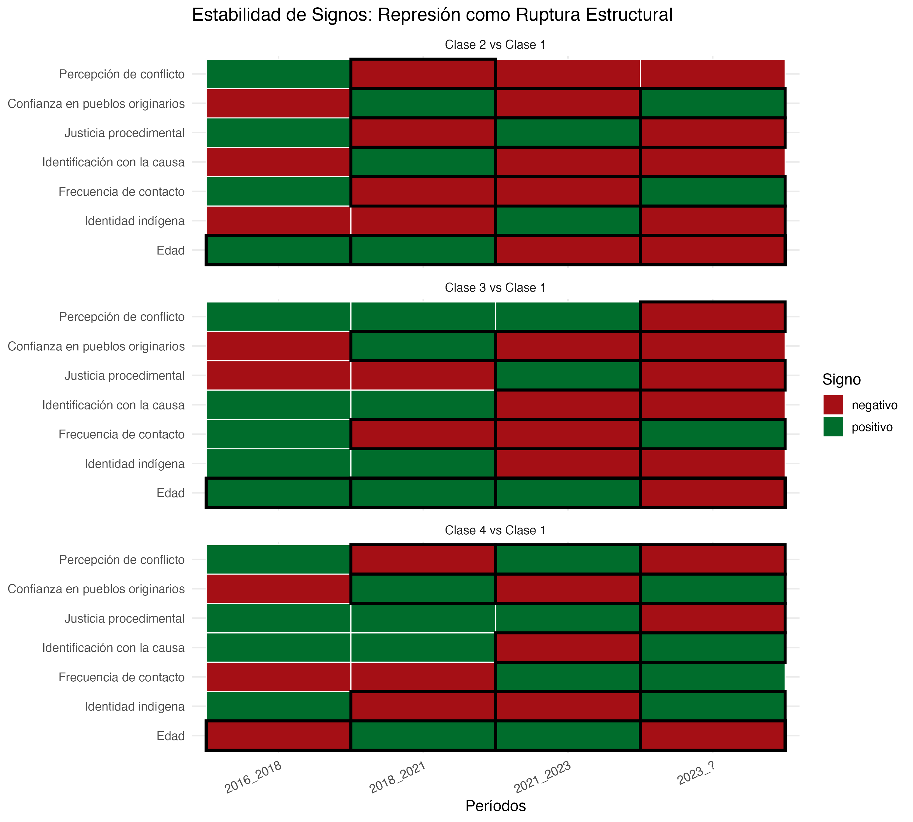

Dinámicas longitudinales de legitimación de la violencia interétnica en Chile, 2016-2023
Resumen analítico para formato tipo journal
1 Abstract
Este documento organiza las principales salidas del análisis longitudinal en un formato breve de artículo. Sobre una muestra panel balanceada de 1193 personas (4774 observaciones-persona), se compararon modelos de 1 a 6 clases latentes y se retuvo una solución de 4 clases. Los resultados sugieren heterogeneidad sustantiva en la legitimación de repertorios de violencia, cambios en la prevalencia de clases entre olas y variación temporal en los predictores de pertenencia y transición. En línea con una lectura prudente, las asociaciones observadas son compatibles con una reconfiguración del contexto político entre 2018 y 2023, especialmente en torno a conflicto, confianza y justicia procedimental.
Keywords: violencia interétnica, clases latentes, transición latente, Chile, longitudinal, conflicto indígena
2 1. Diseño analítico
El pipeline longitudinal quedó separado en dos etapas. Primero, script/02_create-class.R prepara la muestra panel balanceada, compara modelos candidatos y guarda el modelo final en outputs/longitudinal/models/modelo_4c.rds. Segundo, script/03_predictors.R lee ese modelo y genera los outputs descriptivos e inferenciales longitudinales.
La política de missing fijada en el pipeline fue la siguiente: recodificación de códigos especiales a NA, restricción a panel balanceado de cuatro olas, imputación puntual de d5_1 con la mediana del panel balanceado y complete-case para las demás variables analíticas.
3 2. Selección del modelo
La solución final retenida fue de 4 clases, con BIC = r selected_bic. La figura siguiente resume la comparación de modelos candidatos.
| k | logLik | AIC | BIC | n | TT | delta_BIC | delta_AIC |
|---|---|---|---|---|---|---|---|
| 1 | -12298.52 | 24605.05 | 24625.38 | 1193 | 4 | NA | NA |
| 2 | -11060.93 | 22221.86 | 22476.07 | 1193 | 4 | -2149.31 | -2383.19 |
| 3 | -10236.62 | 20721.24 | 21351.68 | 1193 | 4 | -1124.39 | -1500.62 |
| 4 | -9690.22 | 19832.44 | 20981.47 | 1193 | 4 | -370.21 | -888.80 |
| 5 | -9547.45 | 19806.91 | 21616.89 | 1193 | 4 | 635.42 | -25.53 |
| 6 | -9377.00 | 19782.00 | 22395.30 | 1193 | 4 | 778.41 | -24.90 |
4 3. Perfiles latentes
La estructura sustantiva de las clases se resume en las probabilidades condicionales de respuesta y en una propuesta breve de rotulación. El objetivo de estas etiquetas es descriptivo y sirve como base para la narrativa del paper, no como tipología cerrada.

| Clase | Etiqueta | Descripción | Apoyo control (%) | Apoyo cambio (%) |
|---|---|---|---|---|
| 1 | Rechazo amplio de la violencia | Baja justificación tanto de violencia de control como de cambio. | 5.0 | 5.0 |
| 2 | Pro control coercitivo | Alta justificación del control y bajo apoyo a acciones de cambio. | 71.7 | 12.5 |
| 3 | Pro acción indígena | Baja justificación del control y alta legitimación de acciones de cambio indígena. | 15.5 | 74.8 |
| 4 | Legitimación amplia de la violencia | Alta justificación tanto del control como de acciones de cambio. | 93.4 | 94.4 |
5 4. Prevalencia y movilidad por ola
La prevalencia de clases cambia entre olas, lo que sugiere que la distribución de perfiles no permaneció estable a lo largo del panel. La tabla y figura siguientes resumen esa evolución.

| wave | Clase_1 | Clase_2 | Clase_3 | Clase_4 |
|---|---|---|---|---|
| 2016 | 40.7 | 25.3 | 21.4 | 12.5 |
| 2018 | 35.2 | 27.9 | 25.5 | 11.4 |
| 2021 | 33.2 | 24.3 | 30.5 | 12.0 |
| 2023 | 30.6 | 28.7 | 23.1 | 17.7 |
La movilidad agregada fue heterogénea entre periodos. El resumen siguiente permite identificar en qué tramo la distribución fue más estable y en cuál se observó mayor movilidad.
| period | wave_from | wave_to | stability_overall_pct | mobility_overall_pct |
|---|---|---|---|---|
| 2016_2018 | 2016 | 2018 | 38.9 | 61.1 |
| 2018_2021 | 2018 | 2021 | 39.5 | 60.5 |
| 2021_2023 | 2021 | 2023 | 36.0 | 64.0 |


6 5. Predictores de pertenencia y transición
Los efectos de pertenencia inicial informan qué covariables están asociadas con una mayor o menor probabilidad relativa de comenzar en determinadas clases, usando la clase 1 como referencia.

Para las transiciones, la tabla siguiente resume los predictores más fuertes por periodo. La interpretación debe mantenerse en clave asociativa: un OR mayor a 1 es compatible con una mayor probabilidad relativa de transición hacia la comparación indicada, y un OR menor a 1 con una menor probabilidad relativa.
| Periodo | Ola origen | Variable | Comparación | Coeficiente | OR | IC inferior | IC superior | p | Interpretación |
|---|---|---|---|---|---|---|---|---|---|
| 2016_2018 | 2016 | intercept | Clase 4 vs Clase 1 | -5.115 | 0.006 | 0.001 | 0.040 | 0.000 | Asociado con menor probabilidad relativa de transición. |
| 2016_2018 | 2016 | intercept | Clase 3 vs Clase 1 | -2.661 | 0.070 | 0.011 | 0.448 | 0.005 | Asociado con menor probabilidad relativa de transición. |
| 2016_2018 | 2016 | Edad | Clase 4 vs Clase 1 | 0.858 | 2.358 | 1.241 | 4.483 | 0.009 | Asociado con mayor probabilidad relativa de transición. |
| 2018_2021 | 2018 | intercept | Clase 4 vs Clase 1 | -6.313 | 0.002 | 0.000 | 0.022 | 0.000 | Asociado con menor probabilidad relativa de transición. |
| 2018_2021 | 2018 | Justicia procedimental | Clase 3 vs Clase 1 | -1.287 | 0.276 | 0.181 | 0.422 | 0.000 | Asociado con menor probabilidad relativa de transición. |
| 2018_2021 | 2018 | Identificación con la causa | Clase 3 vs Clase 1 | 1.151 | 3.161 | 1.868 | 5.350 | 0.000 | Asociado con mayor probabilidad relativa de transición. |
| 2021_2023 | 2021 | Edad | Clase 3 vs Clase 1 | 7.519 | 1842.802 | 894.423 | 3796.774 | 0.000 | Asociado con mayor probabilidad relativa de transición. |
| 2021_2023 | 2021 | Edad | Clase 3 vs Clase 1 | -6.946 | 0.001 | 0.000 | 0.002 | 0.000 | Asociado con menor probabilidad relativa de transición. |
| 2021_2023 | 2021 | intercept | Clase 2 vs Clase 1 | 4.910 | 135.590 | 15.956 | 1152.234 | 0.000 | Asociado con mayor probabilidad relativa de transición. |
| 2023_? | 2023 | Edad | Clase 2 vs Clase 1 | 6.675 | 792.290 | 347.759 | 1805.055 | 0.000 | Asociado con mayor probabilidad relativa de transición. |
| 2023_? | 2023 | Edad | Clase 2 vs Clase 1 | -6.545 | 0.001 | 0.001 | 0.004 | 0.000 | Asociado con menor probabilidad relativa de transición. |
| 2023_? | 2023 | Edad | Clase 4 vs Clase 1 | -6.332 | 0.002 | 0.001 | 0.005 | 0.000 | Asociado con menor probabilidad relativa de transición. |
7 6. Estabilidad de signos y patrones de ruptura
Una parte central del análisis longitudinal es evaluar si los signos de los coeficientes de transición permanecen estables o cambian entre periodos. Las dos figuras siguientes condensan esa información para las variables clave.


La tabla de ruptura resume, para cada variable, el patrón dominante por periodo, el tramo de ruptura clave y una interpretación breve.
| variable | n_pos | n_neg | 2016_2018 | 2018_2021 | 2021_2023 | 2023_? | n_cambios | ruptura_clave | interpretacion |
|---|---|---|---|---|---|---|---|---|---|
| Edad | 10 | 5 | + | NA | NA | NA | 41 | 2016_2018 | Sugiere reordenamientos generacionales entre periodos. |
| Edad | 8 | 7 | NA | + | + | NA | 41 | 2016_2018 | Sugiere reordenamientos generacionales entre periodos. |
| Edad | 6 | 9 | NA | NA | NA | - | 41 | 2016_2018 | Sugiere reordenamientos generacionales entre periodos. |
| Identidad indígena | 2 | 1 | + | NA | NA | NA | 5 | 2021_2023 | La identidad mantiene relevancia, aunque su signo no es completamente estable. |
| Identidad indígena | 1 | 2 | NA | - | - | - | 5 | 2021_2023 | La identidad mantiene relevancia, aunque su signo no es completamente estable. |
| Frecuencia de contacto | 2 | 1 | + | NA | NA | NA | 5 | 2018_2021 | El contacto aparece como mecanismo menos estable de lo esperado entre periodos. |
| Frecuencia de contacto | 0 | 3 | NA | - | NA | NA | 5 | 2018_2021 | El contacto aparece como mecanismo menos estable de lo esperado entre periodos. |
| Frecuencia de contacto | 1 | 2 | NA | NA | - | NA | 5 | 2018_2021 | El contacto aparece como mecanismo menos estable de lo esperado entre periodos. |
| Frecuencia de contacto | 3 | 0 | NA | NA | NA | + | 5 | 2018_2021 | El contacto aparece como mecanismo menos estable de lo esperado entre periodos. |
| Identificación con la causa | 2 | 1 | + | NA | NA | NA | 5 | 2018_2021 | La identificación parece politizarse y variar con la coyuntura. |
| Identificación con la causa | 3 | 0 | NA | + | NA | NA | 5 | 2018_2021 | La identificación parece politizarse y variar con la coyuntura. |
| Identificación con la causa | 0 | 3 | NA | NA | - | NA | 5 | 2018_2021 | La identificación parece politizarse y variar con la coyuntura. |
| Identificación con la causa | 1 | 2 | NA | NA | NA | - | 5 | 2018_2021 | La identificación parece politizarse y variar con la coyuntura. |
| Justicia procedimental | 2 | 1 | + | NA | NA | NA | 6 | 2018_2021 | Consistente con cambios en la evaluación del trato estatal según el contexto político. |
| Justicia procedimental | 1 | 2 | NA | - | NA | NA | 6 | 2018_2021 | Consistente con cambios en la evaluación del trato estatal según el contexto político. |
| Justicia procedimental | 3 | 0 | NA | NA | + | NA | 6 | 2018_2021 | Consistente con cambios en la evaluación del trato estatal según el contexto político. |
| Justicia procedimental | 0 | 3 | NA | NA | NA | - | 6 | 2018_2021 | Consistente con cambios en la evaluación del trato estatal según el contexto político. |
| Confianza en pueblos originarios | 0 | 3 | - | NA | - | NA | 8 | 2018_2021 | Patrón compatible con reordenamiento de la confianza tras el ciclo de conflicto y represión. |
| Confianza en pueblos originarios | 3 | 0 | NA | + | NA | NA | 8 | 2018_2021 | Patrón compatible con reordenamiento de la confianza tras el ciclo de conflicto y represión. |
| Confianza en pueblos originarios | 2 | 1 | NA | NA | NA | + | 8 | 2018_2021 | Patrón compatible con reordenamiento de la confianza tras el ciclo de conflicto y represión. |
| Percepción de conflicto | 3 | 0 | + | NA | NA | NA | 5 | 2018_2021 | Compatible con una mayor estructuración política de la percepción de conflicto. |
| Percepción de conflicto | 1 | 2 | NA | - | NA | NA | 5 | 2018_2021 | Compatible con una mayor estructuración política de la percepción de conflicto. |
| Percepción de conflicto | 2 | 1 | NA | NA | + | NA | 5 | 2018_2021 | Compatible con una mayor estructuración política de la percepción de conflicto. |
| Percepción de conflicto | 0 | 3 | NA | NA | NA | - | 5 | 2018_2021 | Compatible con una mayor estructuración política de la percepción de conflicto. |
8 7. Evaluación de hipótesis
La validación de hipótesis debe entenderse como una síntesis descriptiva del patrón empírico, no como prueba causal. El cuadro siguiente resume predicciones, observados y validación sustantiva preliminar.
| Hipótesis | Predicción | Observado | Validada |
|---|---|---|---|
| H1: 2018→2021 concentra los cambios de signo | El mayor número de rupturas aparece en 2018_2021 | 2023_? | NO |
| H2: Confianza en pueblos originarios es la más volátil | Confianza presenta el mayor número de cambios | Edad | NO |
| H3: Justicia procedimental pierde capacidad explicativa tras 2018 | Justicia cambia de signo después de 2018 en al menos una comparación | Se observan cambios de signo en algunas comparaciones. | SI |
| H4: Identidad indígena se vuelve más importante post-represión | Identidad indígena mantiene signo positivo en el periodo post-represión | negativo; positivo | SI |
9 8. Timeline de ruptura
Como cierre visual, la siguiente figura resume el número de rupturas de signo por periodo y permite ubicar el análisis en una secuencia temporal coherente con el ciclo político reciente.

10 9. Nota para escritura del paper
Este .qmd está pensado como borrador de resultados tipo journal. Si quieres, el siguiente paso puede ser cualquiera de estos dos:
- convertir este borrador en una versión más cercana a un paper completo con introducción, métodos y discusión desarrollados
- renderizarlo y ajustar tamaño/orden de figuras y tablas para una salida final en HTML o PDF